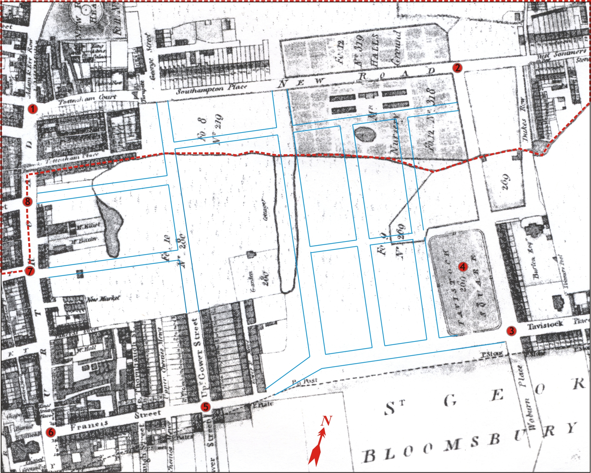

Topography around Steam Circus in 1808 and 2008
Sources:
- Camden Local Studies and Archives Centre.
- Google Inc.
Map Legend
Geographical points of comparison between the old map and current map of the area:
- Junction of Euston Road (old name: New Road), Tottenham Court Road, and Hampstead Road.
- Junction of Euston Road and Upper Wolburn Place.
- Junction of Tavistock Square, Woburn Place, and Tavistock Square.
- Tavistock Square Garden.
- Junction of Gower Street and Torrington Place (old name: Francis Street).
- Junction of Tottenham Court Road and Torrington Place.
- Junction of Tottenham Court Road and University Street (old name: London Street).
- Junction of Tottenham Court Road and Grafton Street.
- Blue solid lines demarcate the approximate extent of current building blocks.
- Area bounded by a dotted red line is the extent of Duke of Grafton Estate, visible within the extent of this map. Please recall that one of the newspaper items indicated the location of steam circus to be on Lady Southampton's estate. Lady Southampton (full name Lady Georgina Laura Fitzroy) was a member of the Duke of Grafton family. The area immediately south of the Duke of Grafton Estate belonged to different owners such as Mr. Mortimer (e.g. main quadrangle area of University College) and Duke of Bedford (e.g. Tavistock Square)
- Bedford Nursery (or Mr. Halls Nursery Ground as shown in 1804 Tompson Map) is now occupied by Euston Grove and Endsleigh Gardens (See the area immediately left of Reference Point no. 2.

An approximate overlay of current street patterns on the 1804 Map of St. Pancras Parish by J. Tomson1.
Click on the image for a higher resolution view. Despite being older by 4 years to Steam Circus, Tomson's Map is cartographically far superior than some recent maps (e.g. 1807 map by Smith and 1809 map by Laurie and Whittle) found so far.
View Larger Map
Map of the study area, recorded in 20082. Please use the zoom-in and zoom-out control to focus on the symbols. Please do a left-click-hold-drag mouse operation to pan across the map. Click on the bubbles for more information.